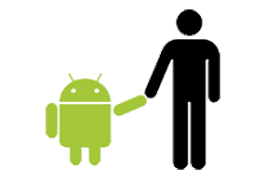

História do mascote do android
Provavelmente você sabe que o sistema android, mantido pelo Google é um dos mais utilizados para os dispostivos móveis em todo o mundo. Más talves você não saiba que o seu simpático mascote tem um nome e uma hitória muito curiosa? Pois acompanhe esse artigo para aprender muito mais coisa sobre esse robozinho
PRIMEIRA VERSÃO
Á primeira tentativa de criar um mascote surgiu em 2007 e veio de um desenvolvedor chamado Dann Morrill. Ele conta que abriu o inkscape (Software livre para valorização de imagens) e criou sua própria versão de robô. O objetivo era apenas personificar o sistema apenas ara sua equipe, não existia nenhuma solicitação da empresa para criação de mascote.
Essa primeira versão bizarra até foi batizada em homenagem ao criador seriam os Dandroids
SURGE UM NOVO MASCOTE
Á ideia de ter um mascote foi amadurecendo e a missão foi passada para uma profissional da área. A ilustradora Irina Block, também funcionária do Google, ficou com a missão de resentar o pequeno robô de uma maneira mais agradável
A ideia da linha era representar tudo graficamente com poucos traços e de forms mais chapada. O desenho também deveria gerar identificação rápida com quem o olha.Surgiu então o Bugdroid. O novo mascote do android.
A pricipal inspiração para os traços do Bugdroid veio daqueles bonequinhos que ilustram portas de banheiro para indicar gênero de cada porta. Conta a lenda que o artista estava criando em sua mesa no escritório do Google e olhou para o lado dos banheiros e a identificação foi imediata simples limpo objetivo